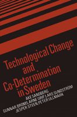

Examining how labor unions and corporations negotiate and cooperate on job design and computerization and technological change in the workplace
Examining how labor unions and corporations negotiate and cooperate on job design and computerization and technological change in the workplace


 Examining how labor unions and corporations negotiate and cooperate on job design and computerization and technological change in the workplace
Examining how labor unions and corporations negotiate and cooperate on job design and computerization and technological change in the workplace

|  |
Technological Change and Co-Determination in Sweden�ke Sandberg with Gunnar Broms Arne Grip Lars Sundstrom Jesper Steen and Peter Ullmark, foreword by Andrew Martincloth EAN: 978-0-87722-918-6 (ISBN: 0-87722-918-X) |
Abel Wolman Award, Public Works Historical Society, 1989
In this book, �ke Sandberg and his colleagues examine how labor unions and corporations negotiate and cooperate on job design and computerization and technological change in the workplace. The research team at the Arbetslivscentrum (The Swedish Center for Working Life) examines organizational problem-solving, from planning and research to resolution. They rely on four illustrative case studies: a Swedish dairy, Postgiro (an office processing payments to postal check accounts), an engineering workshop, and a sugar mill. Building on these studies, the authors compare union participation in modifying and modernizing Swedish work environments to union participation in similar situations elsewhere in Europe and the United States.
This book is the first systematic overview and presentation of social science-oriented and union-oriented worklife research in Sweden. It applies these disciplines to the major organizational changes made possible by the Swedish laws on co-determination—the laws that regulate and encourage joint involvement by union and management in the decision-making process of the organization, especially with regard to technological advancements.
Excerpt available at www.temple.edu/tempress
"This book's empirical core is an account of several action research projects in which Sandberg and his collaborators worked together with workplace unions to bring about changes in job design and work organization. The book draws on experience from these and similar efforts for the ingredients of a comprehensive union strategy for improving the quality of work. Many of these concern the new practices unions need to develop to effectively press work-quality issues at the workplace. But the experience also points to ways in which effectiveness at the workplace level depends on what happens at other levels. This includes the support the national unions provide to workplace efforts and also the capacity of the labor movement as a whole to secure government policies on which the efforts crucially depend, including not only the provision of a favorable legal framework but also policies encouraging the development of technologies that enlarge the possibilities for improving work quality as well as economic policies capable of maintaining full employment. Hence, Sandberg argues, unions need a 'multilevel strategy' to make a significant impact on the quality of work. He rests this argument on his analysis of the new problems facing unions as they try to move beyond the wage issues to which they had been confined to nonwage workplace issues."
—From the Foreword
Tables and Figures
Foreword – Andrew Martin
Preface
Acknowledgments
Abbreviations and Acronyms
1. Introduction
2. Industrial Relations and Co-Determination
3. Innovations in Production and Work Organization
4. Local Unions and Technological Change
5. Case Studies: The Diary and the Postgiro
6. Case Studies: The Engineering Workshop and the Sugar Mill
7. Implications of the Case Studies
8. Comparative Perspectives
9. Multilevel Technology Strategies
10. "New Management" and Good Jobs
Appendix: Some Labor Laws and Agreements
References
Index
About the Authors
�ke Sandberg is Research Director at Arbetslivscentrum and Professor in the Department of Industrial Economics and Management at the Royal Institute of Technology, Stockholm.
Labor and Social Change, edited by Paula Rayman and Carmen Sirianni.
Labor and Social Change, edited by Paula Rayman and Carmen Sirianni, includes books on workplace issues like worker participation, quality of work life, shorter hours, technological change, and productivity, as well as union and community organizing and ethnographies of particular occupations.
© 2015 Temple University. All Rights Reserved. This page: http://www.temple.edu/tempress/titles/446_reg.html.